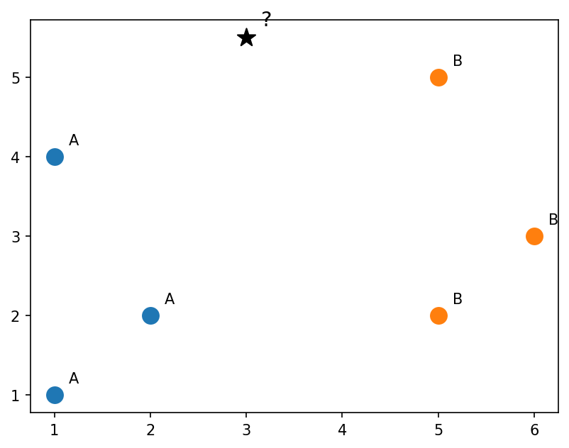
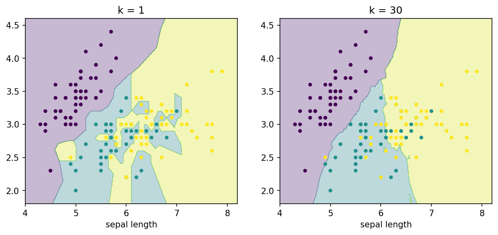
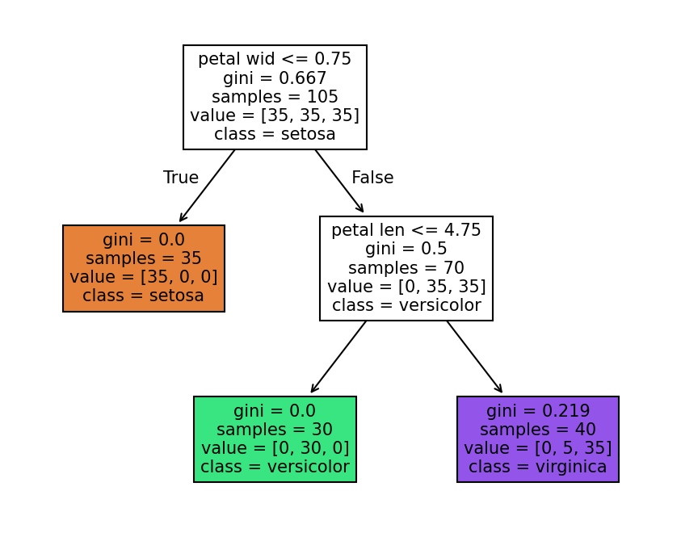

k-nearest neighbours and decision trees
Introduction to Data Science and Machine Learning · Md Mahbub E Noor · University of Barishal
KNeighborsClassifier(n_neighbors=3) DecisionTreeClassifier(max_depth=2)
Class A in blue, class B in orange. Which class should the new point (?) get?
import matplotlib.pyplot as plt
pts = [(1, 1, "A"), (2, 2, "A"), (1, 4, "A"),
(5, 5, "B"), (6, 3, "B"), (5, 2, "B")]
for x, y, c in pts:
plt.scatter(x, y, s=120,
color="tab:blue" if c == "A" else "tab:orange")
plt.annotate(c, (x + 0.15, y + 0.15))
plt.scatter(3, 5.5, s=160, marker="*", color="black")
plt.annotate("?", (3.15, 5.65), fontsize=14)
plt.show()
Distance = √((x - 3)² + (y - 5.5)²). Sort by distance, then let the k nearest vote.
# k = 1: nearest is B (2.06) -> B # k = 3: B (2.06), A (2.5), A (3.64) # A has 2 votes -> A # Same data, different k, different answer!
| rank | point | class | distance |
|---|---|---|---|
| 1 | (5, 5) | B | 2.06 |
| 2 | (1, 4) | A | 2.50 |
| 3 | (2, 2) | A | 3.64 |
| 4 | (6, 3) | B | 3.91 |
| 5 | (5, 2) | B | 4.03 |
| 6 | (1, 1) | A | 4.92 |
Next row: arrow key or the ▶ button. Predict it first!
WATCH FOR
Silent video: press play, pause any time.
n_neighbors is kfrom sklearn.datasets import load_iris
from sklearn.model_selection import train_test_split
from sklearn.neighbors import KNeighborsClassifier
X, y = load_iris(return_X_y=True)
X_tr, X_te, y_tr, y_te = train_test_split(
X, y, test_size=0.3, random_state=1, stratify=y)
for k in [1, 3, 5, 15, 50]:
knn = KNeighborsClassifier(n_neighbors=k)
knn.fit(X_tr, y_tr)
print(k, round(knn.score(X_te, y_te), 3))1 0.978 3 0.978 5 0.978 15 0.978 50 0.867
Two sepal measurements, where the species overlap. Colours show the predicted class at every point: k = 1 draws jagged islands, k = 30 smooth regions.
import numpy as np
X2 = X[:, 0:2]
xx, yy = np.meshgrid(np.linspace(4, 8.2, 300),
np.linspace(1.8, 4.6, 300))
grid = np.c_[xx.ravel(), yy.ravel()]
fig, axes = plt.subplots(1, 2, figsize=(10, 4))
for ax, k in zip(axes, [1, 30]):
m = KNeighborsClassifier(n_neighbors=k).fit(X2, y)
zz = m.predict(grid).reshape(xx.shape)
ax.contourf(xx, yy, zz, alpha=0.3, cmap="viridis")
ax.scatter(X2[:, 0], X2[:, 1], c=y, s=12, cmap="viridis")
ax.set_title(f"k = {k}")
ax.set_xlabel("sepal length")
plt.show()
Is petal width at most 0.75 cm? Each question splits the data in two.
The tree chooses the question that makes each side as pure as possible.
Keep asking until the groups are pure or a depth limit is reached. Leaves give the answer.
max_depth=2: at most two questions per flower · export_text prints the learned rules · class 0 = setosa, 1 = versicolor, 2 = virginica · Nobody wrote these rules: the data did
from sklearn.tree import DecisionTreeClassifier, export_text names = ["sepal len", "sepal wid", "petal len", "petal wid"] tree = DecisionTreeClassifier(max_depth=2, random_state=0) tree.fit(X_tr, y_tr) print(export_text(tree, feature_names=names)) print(round(tree.score(X_te, y_te), 3))
|--- petal wid <= 0.75 | |--- class: 0 |--- petal wid > 0.75 | |--- petal len <= 4.75 | | |--- class: 1 | |--- petal len > 4.75 | | |--- class: 2 0.956
Use the two rules from the previous slide. Then check: the model's own predictions are in the last column.
if petal_wid <= 0.75:
-> setosa (0)
elif petal_len <= 4.75:
-> versicolor (1)
else:
-> virginica (2)| petal len | petal wid | path | model says |
|---|---|---|---|
| 1.5 | 0.2 | wid <= 0.75 | 0 |
| 4.7 | 1.2 | wid > 0.75, len <= 4.75 | 1 |
| 5.8 | 2.2 | wid > 0.75, len > 4.75 | 2 |
Next row: arrow key or the ▶ button. Predict it first!
Each box shows the question, how many flowers reach it, and the class counts. Leaves at the bottom give the answer.
from sklearn.tree import plot_tree
plt.figure(figsize=(7, 5.5))
plot_tree(tree, feature_names=names,
class_names=["setosa", "versicolor", "virginica"],
filled=True, fontsize=10)
plt.show()
WATCH FOR
Silent video: press play, pause any time.
for d in [1, 2, 3, 10]:
t = DecisionTreeClassifier(max_depth=d, random_state=0)
t.fit(X_tr, y_tr)
print(d, t.score(X_tr, y_tr), t.score(X_te, y_te))Read the last line of an error first. It names the problem.
| What you typed | What Python says | What it means |
|---|---|---|
KNeighborsClassifier().predict([[1, 2, 3, 4]]) | NotFittedError: This KNeighborsClassifier instance is not fitted yet. Call 'fit' with appropriate arguments before using this estimator. | Not fitted yet. Call fit before predict. |
knn = KNeighborsClassifier(n_neighbors=200) knn.fit(X_tr, y_tr) knn.predict(X_te) | ValueError: Expected n_neighbors <= n_samples_fit, but n_neighbors = 200, n_samples_fit = 105, n_samples = 45 | k cannot be larger than the number of training rows (105). |
tree.predict([[1.5, 0.2]]) | ValueError: X has 2 features, but DecisionTreeClassifier is expecting 4 features as input. | The model was trained on 4 features; give it 4 values. |
In the lab you can
Opens in a new tab and works offline. All labs: labs/START_HERE.html
KNeighborsClassifier(n_neighbors=k) | Vote of the k nearest |
distance | √(Δx² + Δy²) |
DecisionTreeClassifier(max_depth=d) | Learned if/else rules |
export_text(tree) | Print the rules |
plot_tree(tree) | Draw the tree |
decision boundary | Where predictions change |
k, max_depth | Hyperparameters we choose |
Due before Lecture P1 · [date]
For the six points and new point (4, 4), compute all distances and predict with k = 1, 3 and 5.
On the wine dataset, print test accuracy for k = 1, 3, 5, 9, 15. Which k is best?
Train a depth-2 tree on wine and write its rules as if/elif statements in a text cell.
Adapt the boundary plot for a decision tree of depth 2 and depth 10. Describe the difference.
In 3 sentences: when would you prefer a decision tree to k-nearest neighbours?
Watch it again at home to revise.